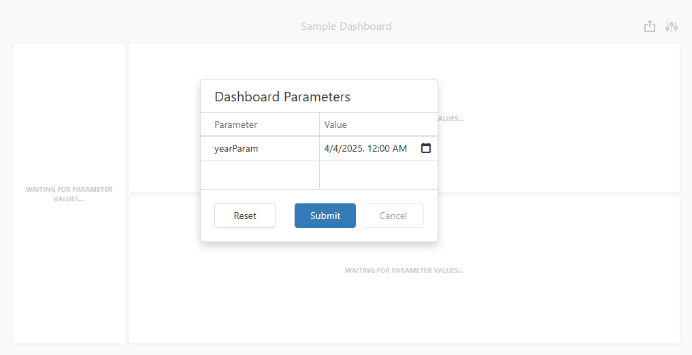

Create Dashboard Parameters in the Web Dashboard
This topic shows how to add a dashboard parameter and specify its settings in the UI.
Create a Parameter
To create a dashboard parameter, follow the steps below.
Invoke the dashboard menu and select Parameters.
In the Parameter List, click the Add button. The parameter's settings form appears as follows:

Specify the parameter's settings.
Parameter Settings
Name
Specifies the parameter name.
When you create and modify parameter names, follow the rules below:
- A name can contain letters, numbers, and underscores.
- A name cannot contain spaces.
- A name cannot be an empty string.
- The dashboard cannot contain parameters with the same name.
- Names are case-sensitive. For example, you can create the names Parameter and PARAMETER.
Description
Specifies the parameter description displayed in the Parameter column of the Dashboard Parameters dialog:

Visible
Specifies whether the parameter is visible in the Dashboard Parameters dialog.
Allow Null
Specifies whether a null value can be passed as a parameter value.
Allow Multiselect
Specifies whether multi-selection is enabled for the current parameter.
- Use the Is any of or Is none of operators to pass a multi-select parameter to a filter criteria or to the Expression format condition.
- Use the In or Not In operators to pass a multi-select parameter to a calculated field expression.
Select All Values
Specifies whether all parameter values should be selected in the initial state of the dashboard.
Note that this option is in effect when the Allow Multiselect setting is enabled.
Type
Specifies the parameter type. Select the parameter type from the drop-down list in the Type field.
The following types are available:
- String
- Date
- Time
- Date and Time
- Number (16-bit integer)
- Number (32-bit integer)
- Number (64-bit integer)
- Number (floating point)
- Number (double-precision floating point)
- Number (decimal)
- Boolean
- GUID (Globally Unique Identifier)
Default Value
Specifies the default parameter value.
Look-Up Settings
Specifies the parameter's look-up editor settings.
The following Look-up Settings are available in the Web Dashboard:
No Look-Up
An end user specifies the parameter value in the Dashboard Parameters dialog.
Static List
An end user selects a parameter value from a static list. To add predefined parameter values, use the plus button.
Dynamic List
An end user selects a parameter value defined in a data source.
Tip
You can also create cascading parameters in the Web Dashboard. For more information, refer to the following topic: Cascading Parameters.
You can specify a data source as a source for dashboard parameter values. To provide access to data source values, specify the following options:
| UI Settings | Description |
|---|---|
| Data Source | Specifies the data source for the dashboard parameter. |
| Data Member | Specifies the name of the data member with the parameter values for SQL and Entity Framework data sources. |
| Value Member | Specifies the name of the data field for the parameter values. |
| Display Member (optional) | Specifies the name of the data field displayed in the Dashboard Parameters dialog as a value description. |
| Sort By (optional) | Specifies the data member used to sort parameter values. |
| Sort Order (optional) | Specifies the sort order. |
Note
You cannot use an OLAP data source as the data source for a dashboard parameter.
Request Parameter Values before Data Loading
You can display a Dashboard Parameters window at startup and prompt a user to input parameter values before a dashboard loads and aggregates data. Dashboard items display the following message to guide users: "Waiting for Parameter Values…".

The Web Dashboard control loads data only after the user submits all visible parameters. This operation mode prevents unnecessary data requests and ensures the dashboard fetches only data the user actually needs.
To activate this mode, open the dashboard menu, switch to the Parameters page, and select the following checkbox: Request Parameter Values before Data Loading. The setting value is saved in the dashboard XML definition.
If a user changes this option at runtime, they need to initiate a data reload. The dashboard displays a Dashboard Parameters pop-up before it fetches data.